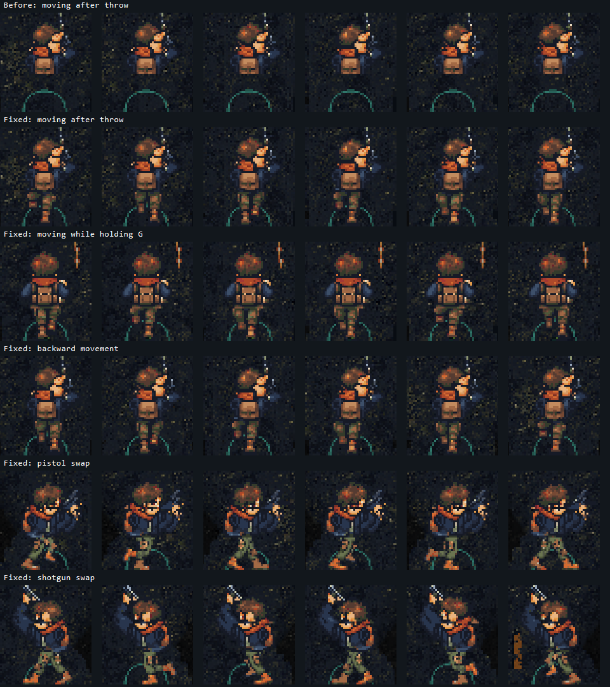

Actual native encounter frames, aligned crops. Top row reproduces the missing legs in the user's tactical HUD candidate. The fixed rows reuse the canonical authored Walk pixels.
Six distinct poses per row; one real throw and blast. Isolated player diagnostic, not a human playtest or new artwork.

Play fixed bundle / Stable technical report / Native capture verification